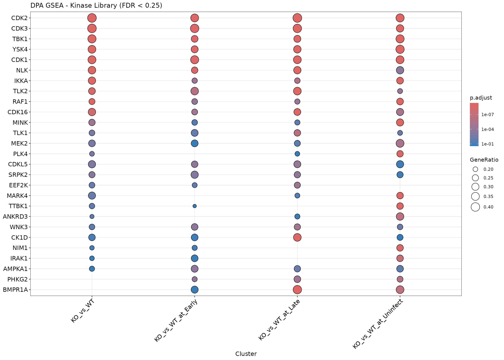
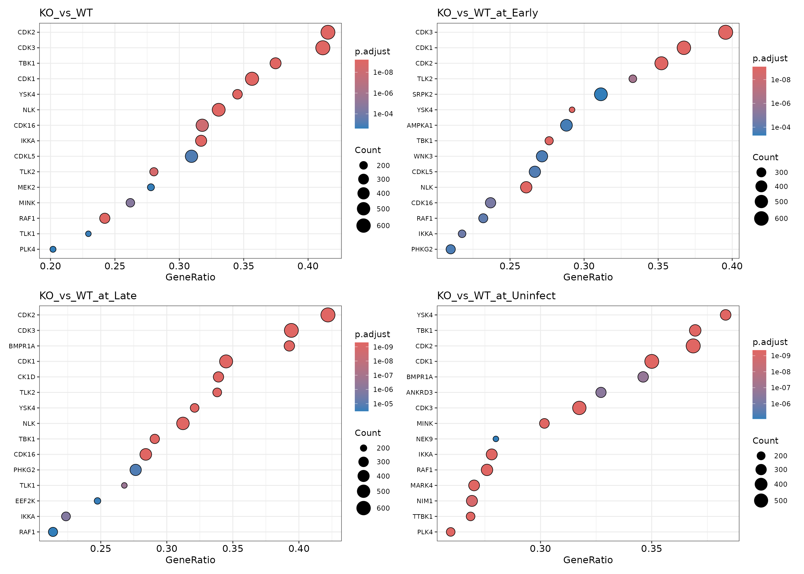
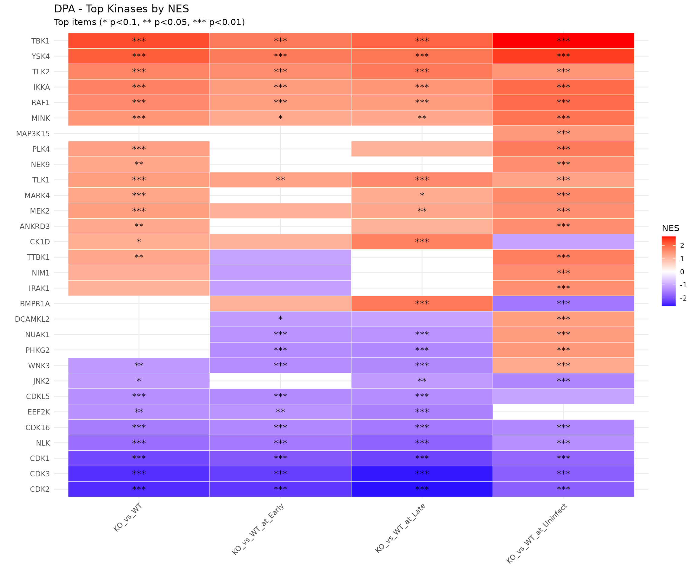
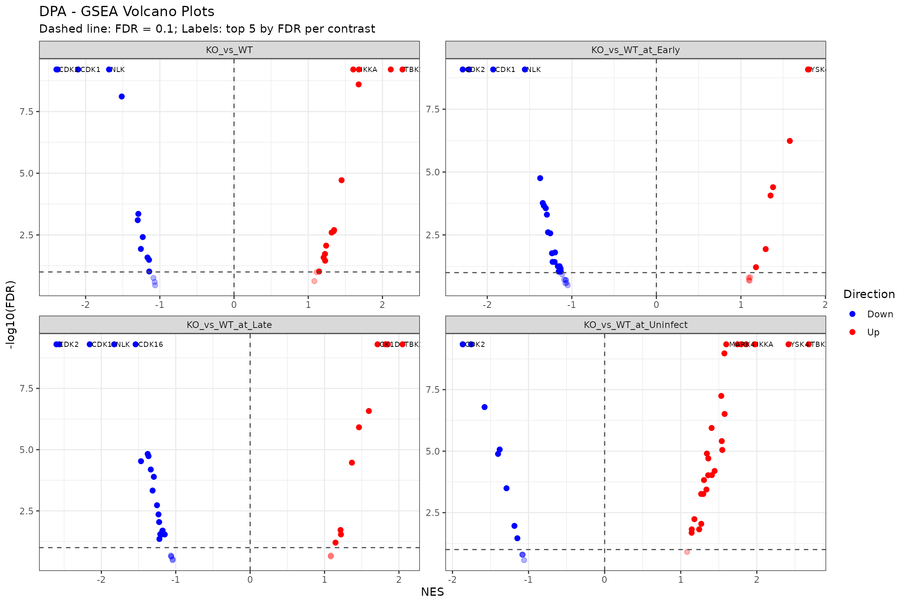

Kinase Activity (Kinase Library + GSEA)
DPA
FGCZ
29 July, 2026
Source:vignettes/Analysis_KinaseLibrary.Rmd
Analysis_KinaseLibrary.RmdIntroduction
This report demonstrates kinase activity inference using the Kinase Library motif predictions. Unlike PTMsigDB (which uses curated kinase-substrate relationships), Kinase Library predicts kinase-substrate assignments based on position-specific scoring matrices (PSSMs) derived from peptide library screens.
We use the term2gene.csv file generated by the
scan-motifs CLI, which contains kinase-sequence
assignments.
Approach: GSEA (Gene Set Enrichment Analysis) using ranked phosphosite statistics.
Load Data and Kinase Library Predictions
library(clusterProfiler)
library(dplyr)
library(tidyr)
library(readxl)
library(ggplot2)
library(enrichplot)
library(purrr)
library(forcats)
library(writexl)
library(patchwork)
library(DT)
library(prophosqua)
if (pipeline_mode) {
# Pipeline mode: load from files
# Use explicit sheet param if provided, otherwise use analysis type as sheet name
if (!is.null(params$sheet)) {
sheet_name <- params$sheet
} else {
# Default: use analysis type as sheet name (works for combined PTM_results.xlsx)
sheet_name <- params$analysis_type
}
# Load differential analysis data
data <- read_xlsx(params$xlsx_file, sheet = sheet_name)
output_dir <- if (!is.null(params$output_dir)) params$output_dir else dirname(params$xlsx_file)
# Define config for stat_col (used in GSEA ranking)
# Combined PTM_results.xlsx uses standardized column names
config <- list(
sheet = sheet_name,
stat_col = "statistic.site"
)
} else {
# Vignette mode: use example data
data("combined_test_diff_example", package = "prophosqua")
data <- combined_test_diff_example
output_dir <- tempdir()
# Define config for vignette mode
config <- list(
sheet = "DPA",
stat_col = "statistic.site"
)
}
# Ensure SequenceWindow column exists
if (!"SequenceWindow" %in% names(data) && "PTM_FlankingRegion" %in% names(data)) {
data <- data |> rename(SequenceWindow = PTM_FlankingRegion)
}
data_info <- tibble(
Property = c("Rows", "Columns", "Contrasts"),
Value = c(nrow(data), ncol(data),
paste(unique(data$contrast), collapse = ", "))
)
knitr::kable(data_info, caption = "Differential Analysis Data")| Property | Value |
|---|---|
| Rows | 105824 |
| Columns | 56 |
| Contrasts | KO_vs_WT, KO_vs_WT_at_Early, KO_vs_WT_at_Late, KO_vs_WT_at_Uninfect |
# Load term2gene - try multiple sources
term2gene_file <- params$term2gene_file
if (is.null(term2gene_file) || !file.exists(term2gene_file)) {
# Try bundled resource (compressed)
bundled_zip <- system.file("extdata", "term2gene.csv.zip", package = "prophosqua")
if (file.exists(bundled_zip)) {
temp_dir <- tempdir()
unzip(bundled_zip, exdir = temp_dir)
term2gene_file <- file.path(temp_dir, "term2gene.csv")
message("Using bundled term2gene from prophosqua package")
}
}
if (is.null(term2gene_file) || !file.exists(term2gene_file)) {
stop("term2gene file not found. Provide via params$term2gene_file or install prophosqua with bundled data.")
}
# Load term2gene from scan-motifs output
term2gene <- read.csv(term2gene_file, stringsAsFactors = FALSE)
kl_info <- tibble(
Property = c("Total assignments", "Unique kinases", "Unique sequences"),
Value = c(nrow(term2gene), n_distinct(term2gene$term), n_distinct(term2gene$gene))
)
knitr::kable(kl_info, caption = "Kinase Library Predictions")| Property | Value |
|---|---|
| Total assignments | 384764 |
| Unique kinases | 311 |
| Unique sequences | 18935 |
# IMPORTANT: Kinase Library sequences have lowercase letters for phosphorylated residues
# (e.g., "PETITIRsGPPSPLP"). Convert to uppercase to match our data.
term2gene <- term2gene |>
mutate(gene = toupper(gene))
# Keep as TERM2GENE format for clusterProfiler GSEA
term2gene_df <- term2gene |>
select(term, gene)
# Vignette mode: subsample to 50 kinase sets for speed
if (!pipeline_mode) {
set.seed(42)
keep_sets <- sample(unique(term2gene_df$term), min(50, n_distinct(term2gene_df$term)))
term2gene_df <- term2gene_df |> filter(term %in% keep_sets)
message("Vignette mode: subsampled to ", length(keep_sets), " kinase sets")
}Kinase-Substrate Assignment Statistics
our_sequences <- data |>
pull(SequenceWindow) |>
trimws() |>
toupper() |>
unique()
assigned_sequences <- unique(term2gene$gene)
overlap_seqs <- intersect(our_sequences, assigned_sequences)
assignment_stats <- tibble(
Metric = c("Phosphosites in differential analysis",
"Sites with kinase assignments",
"Sites usable for GSEA",
"Coverage (%)"),
Value = c(length(our_sequences),
length(assigned_sequences),
length(overlap_seqs),
round(100 * length(overlap_seqs) / length(our_sequences), 1))
)
knitr::kable(assignment_stats, caption = "Assignment Statistics")| Metric | Value |
|---|---|
| Phosphosites in differential analysis | 21683.0 |
| Sites with kinase assignments | 18902.0 |
| Sites usable for GSEA | 18902.0 |
| Coverage (%) | 87.2 |
# Calculate kinase set sizes from term2gene
kinase_sizes <- term2gene_df |>
count(term, name = "size")
kinase_overlap <- term2gene_df |>
filter(gene %in% our_sequences) |>
count(term, name = "overlap")
kinase_stats <- tibble(
Metric = c("Number of kinases", "Mean substrates/kinase", "Median substrates/kinase",
"Range (min-max)", "Mean substrates in our data",
"Kinases with >= 15 substrates"),
Value = c(nrow(kinase_sizes),
round(mean(kinase_sizes$size)),
median(kinase_sizes$size),
paste(min(kinase_sizes$size), "-", max(kinase_sizes$size)),
round(mean(kinase_overlap$overlap, na.rm = TRUE)),
sum(kinase_overlap$overlap >= 15, na.rm = TRUE))
)
knitr::kable(kinase_stats, caption = "Kinase Set Size Distribution")| Metric | Value |
|---|---|
| Number of kinases | 50 |
| Mean substrates/kinase | 1246 |
| Median substrates/kinase | 1299.5 |
| Range (min-max) | 593 - 1694 |
| Mean substrates in our data | 1246 |
| Kinases with >= 15 substrates | 50 |
Prepare Ranked Lists
# Prepare ranked lists using prophosqua function
ranks <- prepare_gsea_ranks(
data,
stat_col = config$stat_col,
seq_col = "SequenceWindow",
contrast_col = "contrast"
)
ranks_info <- tibble(
Contrast = names(ranks),
Sites = map_int(ranks, length)
)
knitr::kable(ranks_info, caption = paste(params$analysis_type, "Ranks Prepared"))| Contrast | Sites |
|---|---|
| KO_vs_WT | 21682 |
| KO_vs_WT_at_Early | 21682 |
| KO_vs_WT_at_Late | 21682 |
| KO_vs_WT_at_Uninfect | 21682 |
GSEA Analysis
gsea_results <- names(ranks) |>
set_names() |>
map(function(ct) {
GSEA(
geneList = ranks[[ct]],
TERM2GENE = term2gene_df,
minGSSize = params$min_size,
maxGSSize = params$max_size,
pvalueCutoff = 0.25,
nPermSimple = params$n_perm,
verbose = FALSE
)
})
gsea_info <- tibble(
Contrast = names(gsea_results),
`Significant Kinases (FDR < 0.25)` = map_int(gsea_results, ~sum(.x@result$p.adjust < 0.25, na.rm = TRUE))
)
knitr::kable(gsea_info, caption = paste(params$analysis_type, "GSEA Results Summary"))| Contrast | Significant Kinases (FDR < 0.25) |
|---|---|
| KO_vs_WT | 29 |
| KO_vs_WT_at_Early | 36 |
| KO_vs_WT_at_Late | 36 |
| KO_vs_WT_at_Uninfect | 41 |
cat("\n\n# No GSEA Results\n\n")
cat("No kinase gene sets passed the size filter (min_size=", params$min_size, ").\n")
cat("This typically means too few phosphosites overlap with kinase library assignments.\n\n")
cat("**Coverage was:", length(overlap_seqs), "sites out of", length(our_sequences), "**\n\n")Results by Contrast
# Extract all results into data frame using shared function
all_clean <- extract_gsea_results(gsea_results) |>
mutate(kinase = ID)
for (ctr in unique(all_clean$contrast)) {
cat("\n\n## ", ctr, "\n\n")
ctr_data <- all_clean |> filter(contrast == ctr)
n_sig <- sum(ctr_data$p.adjust < 0.1, na.rm = TRUE)
cat("**Significant kinases (FDR < 0.1):** ", n_sig, "\n\n")
# Using shared dotplot function
p <- plot_enrichment_dotplot(
ctr_data,
item_col = "kinase",
fdr_col = "p.adjust",
title = paste0(params$analysis_type, " - ", ctr),
subtitle = "Top 30 kinases by FDR"
)
print(p)
cat("\n\n")
# Significant kinases table
cat("**Significant Kinases (FDR < 0.1):**\n\n")
sig_table <- ctr_data |>
filter(p.adjust < 0.1) |>
select(kinase, NES, pvalue, FDR = p.adjust, setSize) |>
arrange(FDR) |>
mutate(across(where(is.numeric), ~round(.x, 4)))
print(htmltools::tagList(
DT::datatable(sig_table,
extensions = 'Buttons',
options = list(pageLength = 15, scrollX = TRUE,
dom = 'Bfrtip', buttons = c('copy', 'csv', 'excel')))
))
cat("\n\n")
}clusterProfiler Dotplots
Merged Dotplot
merged <- merge_result(gsea_results)
dotplot(merged, showCategory = 15,
title = paste(params$analysis_type, "GSEA - Kinase Library (FDR < 0.25)")) +
theme(axis.text.x = element_text(angle = 45, hjust = 1))
Individual Contrasts
plots <- names(gsea_results) |>
map(function(ct) {
res <- gsea_results[[ct]]@result
# Skip if no results
if (nrow(res) == 0 || sum(!is.na(res$NES)) == 0) {
return(ggplot() +
annotate("text", x = 0.5, y = 0.5, label = paste(ct, "\nNo significant kinases")) +
theme_void() + ggtitle(ct))
}
dotplot(gsea_results[[ct]], showCategory = 15, title = ct) +
theme(axis.text.y = element_text(size = 8))
})
wrap_plots(plots, ncol = 2)
NES Heatmap
# Using shared heatmap function
plot_enrichment_heatmap(
all_clean,
item_col = "ID",
fdr_col = "p.adjust",
fdr_filter = 0.25,
n_top = 30,
title = paste(params$analysis_type, "- Top Kinases by NES")
)
Volcano Plot
# Using shared volcano function
plot_enrichment_volcano(
all_clean,
item_col = "ID",
fdr_col = "p.adjust",
title = paste(params$analysis_type, "- GSEA Volcano Plots")
)
Diagnostics
pval_diag <- names(gsea_results) |>
map_dfr(function(ct) {
res <- gsea_results[[ct]]@result
tibble(
Contrast = ct,
`Min p-value` = signif(min(res$pvalue, na.rm = TRUE), 3),
`p < 0.05` = sum(res$pvalue < 0.05, na.rm = TRUE),
`p < 0.01` = sum(res$pvalue < 0.01, na.rm = TRUE),
Total = nrow(res)
)
})
knitr::kable(pval_diag, caption = paste("Raw p-value Distribution (", params$analysis_type, ")"))| Contrast | Min p-value | p < 0.05 | p < 0.01 | Total |
|---|---|---|---|---|
| KO_vs_WT | 0 | 26 | 20 | 31 |
| KO_vs_WT_at_Early | 0 | 26 | 20 | 39 |
| KO_vs_WT_at_Late | 0 | 31 | 24 | 38 |
| KO_vs_WT_at_Uninfect | 0 | 37 | 33 | 42 |
Export All GSEA Plots to PDF
# Export all GSEA enrichment plots to PDF using shared function
pdf_file <- file.path(output_dir, paste0("GSEA_plots_", params$analysis_type, ".pdf"))
n_plots <- export_gsea_plots_pdf(gsea_results, pdf_file)
cat("Exported", n_plots, "GSEA plots to:", pdf_file, "\n")GSEA Enrichment Plots
Showing top 3 plots per contrast.
for (ct in names(gsea_results)) {
cat("\n\n### ", ct, " {.tabset}\n\n")
res <- gsea_results[[ct]]
top10 <- res@result |>
as_tibble() |>
arrange(pvalue) |>
head(params$top_genesets) |>
pull(ID)
for (i in seq_along(top10)) {
geneset <- top10[i]
cat("\n\n#### ", geneset, "\n\n")
row <- res@result |>
as_tibble() |>
filter(ID == geneset)
nes_val <- round(row$NES, 2)
fdr <- signif(row$p.adjust, 2)
p <- gseaplot2(res, geneSetID = geneset,
title = paste0(geneset, " (NES=", nes_val, ", FDR=", fdr, ")"))
print(p)
cat("\n\n")
}
}All Results
# All kinases across all contrasts
all_results_dt <- names(gsea_results) |>
map_dfr(function(ct) {
gsea_results[[ct]]@result |>
as_tibble() |>
mutate(contrast = ct) |>
select(contrast, kinase = ID, NES, pvalue, FDR = p.adjust, setSize)
}) |>
arrange(contrast, FDR) |>
mutate(across(where(is.numeric), ~round(.x, 4)))
DT::datatable(all_results_dt,
filter = "top",
extensions = 'Buttons',
options = list(pageLength = 15, scrollX = TRUE,
dom = 'Bfrtip', buttons = c('copy', 'csv', 'excel')),
caption = "All kinases across all contrasts")Export Results
dir.create(output_dir, recursive = TRUE, showWarnings = FALSE)
# Combine all results
all_results_export <- names(gsea_results) |>
map_dfr(function(ct) {
gsea_results[[ct]]@result |>
as_tibble() |>
mutate(contrast = ct) |>
select(contrast, kinase = ID, NES, pvalue, FDR = p.adjust, setSize)
})
# Export to Excel
export_list <- list(
all_results = all_results_export |> arrange(contrast, FDR),
significant = all_results_export |> filter(FDR < 0.1) |> arrange(contrast, FDR),
summary = gsea_info
)
xlsx_file <- file.path(output_dir, paste0("KinaseLib_GSEA_", params$analysis_type, ".xlsx"))
writexl::write_xlsx(export_list, xlsx_file)
cat("Exported Excel:", xlsx_file, "\n")
# Export RDS with full clusterProfiler result objects
rds_file <- file.path(output_dir, paste0("KinaseLib_GSEA_", params$analysis_type, ".rds"))
saveRDS(gsea_results, rds_file)
cat("Exported RDS:", rds_file, "\n")
message("Vignette mode: File export skipped.")Session Info
## R version 4.6.1 (2026-06-24)
## Platform: x86_64-pc-linux-gnu
## Running under: Ubuntu 24.04.4 LTS
##
## Matrix products: default
## BLAS: /usr/lib/x86_64-linux-gnu/openblas-pthread/libblas.so.3
## LAPACK: /usr/lib/x86_64-linux-gnu/openblas-pthread/libopenblasp-r0.3.26.so; LAPACK version 3.12.0
##
## locale:
## [1] LC_CTYPE=C.UTF-8 LC_NUMERIC=C LC_TIME=C.UTF-8
## [4] LC_COLLATE=C.UTF-8 LC_MONETARY=C.UTF-8 LC_MESSAGES=C.UTF-8
## [7] LC_PAPER=C.UTF-8 LC_NAME=C LC_ADDRESS=C
## [10] LC_TELEPHONE=C LC_MEASUREMENT=C.UTF-8 LC_IDENTIFICATION=C
##
## time zone: UTC
## tzcode source: system (glibc)
##
## attached base packages:
## [1] stats graphics grDevices utils datasets methods base
##
## other attached packages:
## [1] prophosqua_0.3.0 DT_0.34.0 patchwork_1.3.2
## [4] writexl_1.5.4 forcats_1.0.1 purrr_1.2.2
## [7] enrichplot_1.32.0 ggplot2_4.0.3 readxl_1.5.0
## [10] tidyr_1.3.2 dplyr_1.2.1 clusterProfiler_4.20.0
##
## loaded via a namespace (and not attached):
## [1] DBI_1.3.0 gson_0.2.0 httr2_1.3.0
## [4] rlang_1.3.0 magrittr_2.0.5 DOSE_4.6.0
## [7] otel_0.2.0 compiler_4.6.1 RSQLite_3.53.3
## [10] png_0.1-9 systemfonts_1.3.2 callr_3.8.0
## [13] vctrs_0.7.3 reshape2_1.4.5 stringr_1.6.0
## [16] pkgconfig_2.0.3 crayon_1.5.3 fastmap_1.2.0
## [19] XVector_0.52.0 labeling_0.4.3 rmarkdown_2.31
## [22] ps_1.9.3 ragg_1.5.2 bit_4.6.0
## [25] xfun_0.60 ggseqlogo_0.2.2 cachem_1.1.0
## [28] aplot_0.3.1 jsonlite_2.0.0 blob_1.3.0
## [31] tidydr_0.0.6 tweenr_2.0.3 cluster_2.1.8.2
## [34] parallel_4.6.1 R6_2.6.1 bslib_0.11.0
## [37] stringi_1.8.7 RColorBrewer_1.1-3 cellranger_1.1.0
## [40] enrichit_0.2.0 jquerylib_0.1.4 GOSemSim_2.38.3
## [43] Rcpp_1.1.2 Seqinfo_1.2.0 bookdown_0.47
## [46] knitr_1.51 ggtangle_0.1.2 IRanges_2.46.0
## [49] splines_4.6.1 Matrix_1.7-5 igraph_2.3.3
## [52] aisdk_1.4.12 tidyselect_1.2.1 qvalue_2.44.0
## [55] yaml_2.3.12 processx_3.9.0 lattice_0.22-9
## [58] tibble_3.3.1 plyr_1.8.9 withr_3.0.3
## [61] Biobase_2.72.0 treeio_1.36.1 KEGGREST_1.52.2
## [64] S7_0.2.2 evaluate_1.0.5 gridGraphics_0.5-1
## [67] desc_1.4.3 polyclip_1.10-7 scatterpie_0.2.6
## [70] Biostrings_2.80.1 pillar_1.11.1 ggtree_4.2.0
## [73] stats4_4.6.1 ggfun_0.2.1 generics_0.1.4
## [76] S4Vectors_0.50.1 scales_1.4.0 tidytree_0.4.8
## [79] glue_1.8.1 gdtools_0.5.1 lazyeval_0.2.3
## [82] tools_4.6.1 ggnewscale_0.5.2 ggiraph_0.9.6
## [85] fs_2.1.0 grid_4.6.1 ape_5.8-1
## [88] crosstalk_1.2.2 AnnotationDbi_1.74.0 nlme_3.1-169
## [91] ggforce_0.5.0 cli_3.6.6 rappdirs_0.3.4
## [94] textshaping_1.0.5 fontBitstreamVera_0.1.1 gtable_0.3.6
## [97] yulab.utils_0.2.4 sass_0.4.10 digest_0.6.39
## [100] fontquiver_0.2.1 BiocGenerics_0.58.1 ggrepel_0.9.8
## [103] ggplotify_0.1.3 htmlwidgets_1.6.4 farver_2.1.2
## [106] memoise_2.0.1 htmltools_0.5.9 pkgdown_2.2.1
## [109] lifecycle_1.0.5 httr_1.4.8 GO.db_3.23.1
## [112] fontLiberation_0.1.0 bit64_4.8.2 MASS_7.3-65